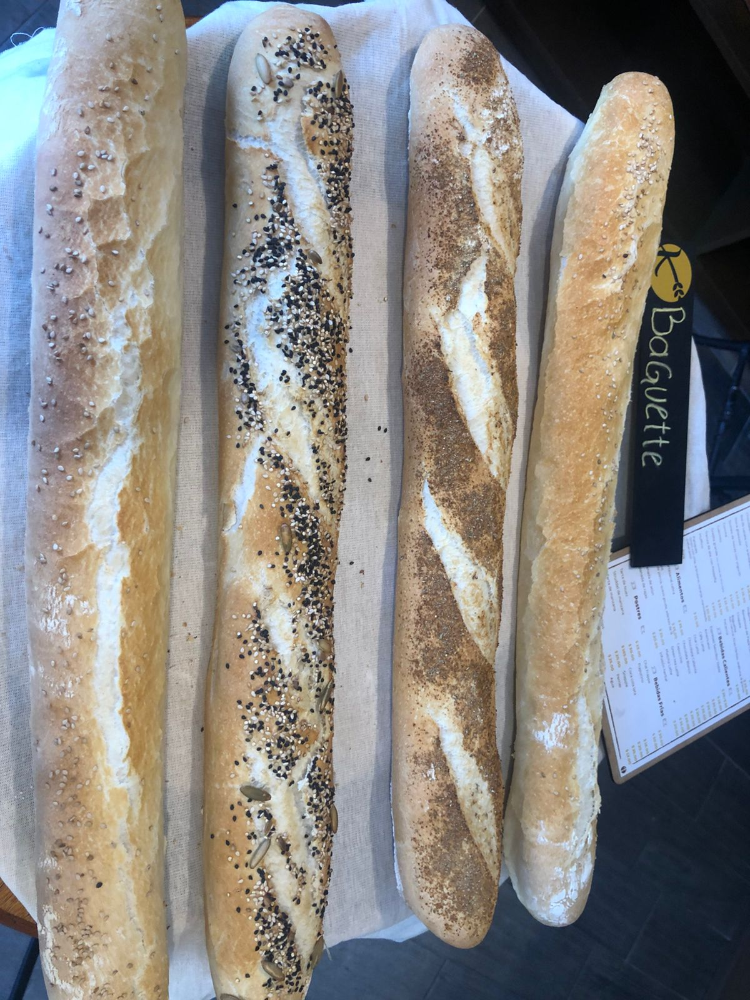

baguette
🥖 Baguettes Artesanales Elaboradas con masa madre y horneadas a la perfección, nuestras baguettes combinan una corteza dorada y crujiente con una miga suave y ligera. Cada una ofrece un toque especial: desde la tradicional francesa hasta versiones cubiertas con semillas, especias o granos selectos. Perfectas para acompañar quesos, vinos, sopas o simplemente disfrutar con un poco de mantequilla. Un clásico francés reinterpretado con el sabor y la textura que solo la panadería artesanal puede ofrecer.
variedades disponibles: Clásica: suave, crujiente y de sabor equilibrado. Multisemillas: mezcla de ajonjolí, girasol, linaza y chía. Con especias: toque aromático y sabroso con hierbas selectas. Integral o de cereal: rica en fibra y con sabor a grano tostado..